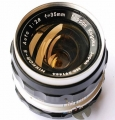

les007new2013-04-16 16:105 分
操作性 5.00耐用性 5.00性价比 5.00解像力 5.00色彩还原 5.00机械结构 5.00
DADAOZEI96692011-09-07 10:14
DADAOZEI96692011-09-02 22:114.58 分
操作性 4.50耐用性 5.00性价比 5.00解像力 4.50色彩还原 4.50机械结构 4.00
les007new2010-04-02 11:24
shatgu2010-03-31 11:444 分
操作性 4.00耐用性 5.00性价比 4.00解像力 3.00色彩还原 3.00机械结构 5.00
kayella2009-04-22 17:275 分
操作性 5.00耐用性 5.00性价比 5.00解像力 5.00色彩还原 5.00机械结构 5.00

pentaxLX2008-05-06 18:443.92 分
操作性 4.00耐用性 4.00性价比 4.00解像力 4.00色彩还原 3.50机械结构 4.00
photo722006-03-22 17:234.25 分
操作性 4.00耐用性 4.50性价比 5.00解像力 4.00色彩还原 3.50机械结构 4.50
jianshu17522006-03-21 22:264.17 分
操作性 4.50耐用性 4.50性价比 4.50解像力 4.00色彩还原 4.00机械结构 3.50
经典是硬道理2004-11-14 10:084.25 分
操作性 4.00耐用性 3.50性价比 5.00解像力 4.50色彩还原 4.50机械结构 4.00